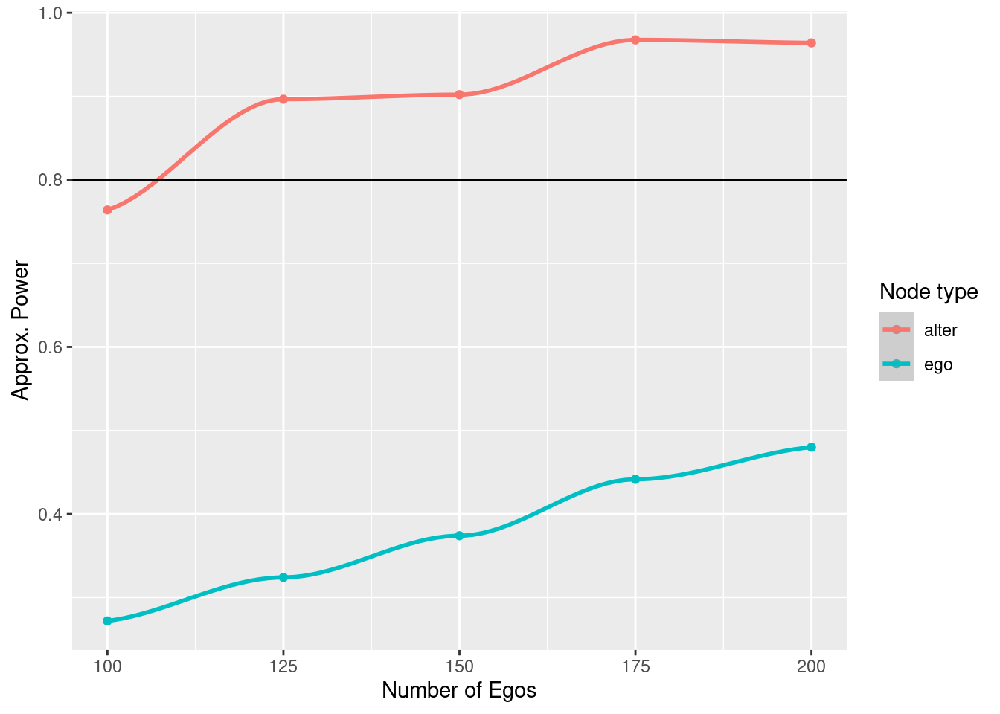

13.1 Example 1: Spillover effects in egocentric studies13
Suppose that we want to run an intervention over a particular population and we are interested in the effects such intervention will have over the egos’ alters. In economics, this problem, which they call the “spillover effect,” is actively studied.
For the power calculation, we will assume that alters only get exposed if egos acquire the behavior. Furthermore, for this first run, we will assume that there is no social reinforcement or influence between alters. We will later relax this assumption. To calculate power we will do the following:
Simulate egos’ behavior following a logit distribution.
Randomly drop some egos as a result of attrition.
Simulate alters’ behavior using their egos as the treatment.
Fit a logistic regression based on the previous model.
Accept/reject the null and store the result.
The previous steps will be repeated 500 for each value of \(n\) we analyze. We will finalize by plotting power against sample sizes. Let’s first start by writing down the simulation parameters:
# Design
n_sims <- 1000 # Number of simulations
n_a <- 5 # Number of alters
sizes <- # Sizes to try
seq(from = 100, to = 350, by = 25)
# Assumptions
odds_h_1 <- 1.5 # Odds of Increase/
attrition <- .3
baseline <- .2 # Low prevalence in 1s
# Parameters
alpha <- .05
beta_pow <- 0.2As we discuss in 16, it is always a good idea to encapsule the simulation into a function:
# The odds turned to a prob
theta_h_1 <- plogis(log(odds_h_1))
# Simulation function
sim_data <- function(n) {
# Treatment assignment
tr <- c(rep(1, n/2), rep(0, n/2))
# Step 1: Sampling population of egos
y_ego <- runif(n) < c(
rep(theta_h_1, n/2),
rep(0.5, n/2)
)
# Step 2: Simulating attrition
todrop <- order(runif(n))[1:(n * attrition)]
y_ego <- y_ego[-todrop]
tr <- tr[-todrop]
n <- n - length(todrop)
# Step 3: Simulating alter's effect. We assume the same as in
# ego
tr_alter <- rep(y_ego * tr, n_a)
y_alter <- runif(n * n_a) < ifelse(tr_alter, theta_h_1, 0.5)
# Step 4: Computing test statistic
res_ego <- tryCatch(glm(y_ego ~ tr, family = binomial("logit")), error = function(e) e)
res_alter <- tryCatch(glm(y_alter ~ tr_alter, family = binomial("logit")), error = function(e) e)
if (inherits(res_ego, "error") | inherits(res_alter, "error"))
return(c(ego = NA, alter = NA))
# Step 5: Reject?
c(
ego = summary(res_ego)$coefficients["tr", "Pr(>|z|)"] < alpha,
alter = summary(res_alter)$coefficients["tr_alter", "Pr(>|z|)"] < alpha
)
}Now that we have the data generating function, we can run the simulations to approximate statistical power given the sample size. Since we are simulating data, it is important to set the seed so that we can reproduce the results. The results will be stored in the matrix spower.
# We always set the seed
set.seed(88)
# Making space, and running!
spower <- NULL
for (s in sizes) {
# Run the simulation for size s
simres <- rowMeans(replicate(n_sims, sim_data(s)), na.rm = TRUE)
# And store the results
spower <- rbind(spower, simres)
}The following figure shows the approximate power for finding effects at both levels, ego and alter:
library(ggplot2)
spower <- rbind(
data.frame(size = sizes, power = spower[,"ego"], type = "ego"),
data.frame(size = sizes, power = spower[,"alter"], type = "alter")
)
spower |>
ggplot(aes(x = size, y = power, colour = type)) +
geom_point() +
geom_smooth(method = "loess", formula = y ~ x) +
labs(x = "Number of Egos", y = "Approx. Power", colour = "Node type") +
geom_hline(yintercept = 1 - beta_pow)
As shown in Chapter 16, we can use a linear regression model to predict sample size as a function of statistical power:
# Fitting the model
power_model <- glm(
size ~ power + I(power^2),
data = spower, family = gaussian(), subset = type == "alter"
)
summary(power_model)##
## Call:
## glm(formula = size ~ power + I(power^2), family = gaussian(),
## data = spower, subset = type == "alter")
##
## Deviance Residuals:
## Min 1Q Median 3Q Max
## -25.702 -11.940 3.638 11.915 16.094
##
## Coefficients:
## Estimate Std. Error t value Pr(>|t|)
## (Intercept) 185.1 101.4 1.827 0.1052
## power -473.5 329.0 -1.439 0.1880
## I(power^2) 728.4 252.8 2.882 0.0205 *
## ---
## Signif. codes: 0 '***' 0.001 '**' 0.01 '*' 0.05 '.' 0.1 ' ' 1
##
## (Dispersion parameter for gaussian family taken to be 279.529)
##
## Null deviance: 68750.0 on 10 degrees of freedom
## Residual deviance: 2236.2 on 8 degrees of freedom
## AIC: 97.678
##
## Number of Fisher Scoring iterations: 2## 1
## 273From the figure, it becomes apparent that, although there is not enough power to identify effects at the ego level, because each ego brings in five alters, the alter sample size is high enough that we can reach above 0.8 statistical power with relatively small sample size.
The original problem was posed by Dr. Shinduk Lee from the School of Nursing at the University of Utah.↩